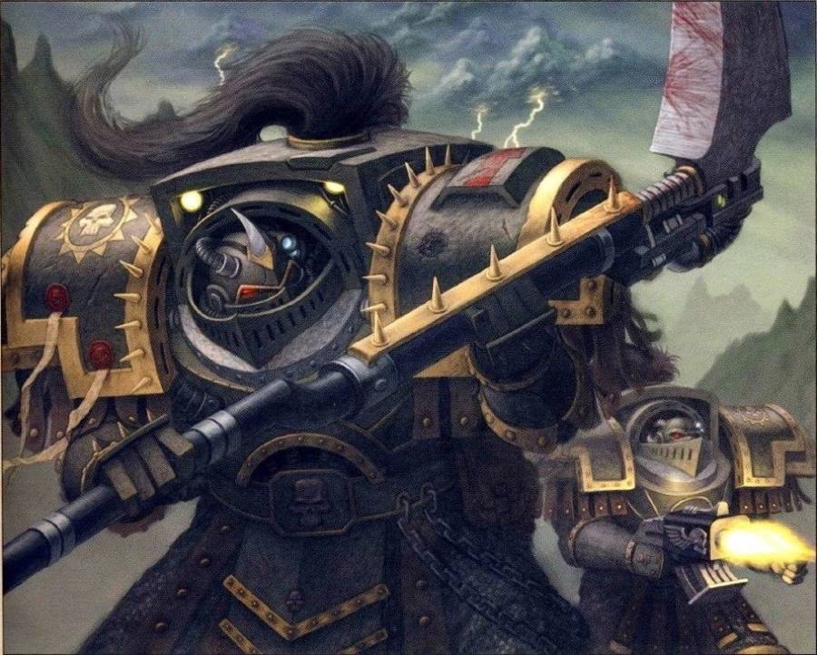
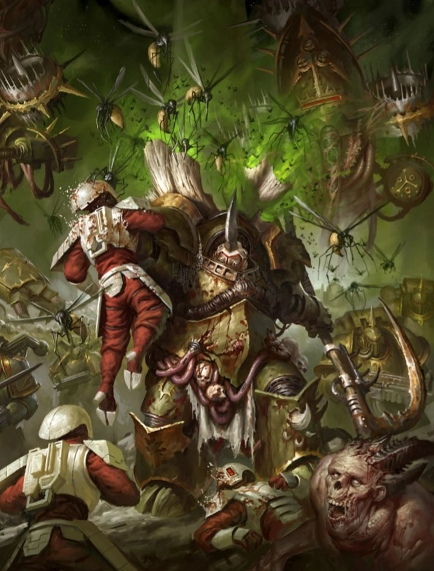

Typhus
| Typhus | |
|---|---|
| Herald of Nurgle | |
 The Host of the Destroyer Hive in the Era Indomitus | |
| First Captain of the Death Guard | |
| Tenure | Great Crusade – Horus Heresy |
| Primarch | Mortarion |
| Lord of the 1st Plague Company | |
| Tenure | M31 – present |
| Flagship | Terminus Est |
| Born | Barbarus, M30, of a human mother and an Overlord of Barbarus |
| Transformed | In the Warp, during the Horus Heresy |
| Status | Active; at large with the 1st Plague Company |
| Allegiance | Nurgle; formerly the Emperor of Mankind |
| Legion | XIV Legion, the Death Guard |
| Wargear | The Manreaper; Blight grenades; the Destroyer Hive |
| Known for | Leading the Death Guard into Nurgle's grasp; the Zombie Plague; the Plague Wars |
Typhus, called the Herald of Nurgle, the Host of the Destroyer Hive and Typhus the Traveller, is a Chaos Space Marine of the Death Guard, formerly the Legion's First Captain under the name Calas Typhon. A secret psyker of the blood of the tyrants of Barbarus, he turned to Chaos before the Horus Heresy, and during the Heresy delivered the Death Guard to Nurgle by stranding its fleet in the Warp, where the Destroyer Plague transformed the Legion. Typhus himself became a living hive of daemonic flies.[1]
After the Siege of Terra he rejected Mortarion's rule of the Plague Planet and took to the stars at the head of a plague fleet. For ten thousand years he has spread disease through the Imperium, and he is held responsible for the Zombie Plague that has devastated the Segmentum Obscurus. Typhus regards himself, not his primarch, as Nurgle's truest servant.[2]
In the Era Indomitus Typhus has corrupted the forge world of Metalica, pursued Fabius Bile in the War of the Spider, led a splinter fleet in the Plague Wars against Ultramar and openly broken with Mortarion, humbled Huron Blackheart on Danasar and raided the Iron Hands' world of Medusa. He is at large.[3]
Early life
[edit]Calas Typhon was born on Barbarus, the poisoned world on which the infant Mortarion was raised by the psyker Overlords who ruled it from the mountain heights. Typhon was a half-breed, the child of one of those Overlords and a human woman, whom her fellow villagers drowned after his birth. As a boy he was troubled at night by phenomena he could not control: objects shuddered and broke around him when he was frightened or angry, and plants withered under his gaze. By the time he reached maturity he had mastered the powers by will.[4]
When Mortarion turned against his foster father, the High Overlord Necare, Typhon was the first human he met in the lowlands, and he guided the young primarch to safety. He fought as a champion of Mortarion's militia in the war against the Overlords, and when the Emperor came to Barbarus and gave Mortarion the XIV Legion, Typhon was among those chosen to join it.[4]
First Captain
[edit]Mortarion despised psychic power as the weapon of the tyrants he had overthrown, and Typhon learned to hide his gift and rely on his iron will and stamina, which outlasted all others in the Legion's toxin trials. Mortarion raised his old companion to First Captain. Typhon became a legend of endurance in the Great Crusade: in the tribewars of Rothric IX he took a mace blow to the head and killed every warrior near him with an iron bar, and on Madrighoul he threw himself on a faulty grenade to save a squad of the Sisters of Silence and discharged himself from the Apothecarion within a week.[1]
While serving alongside the Word Bearers, Typhon was inducted by their First Chaplain Erebus into the Seven Pillared Lodge, one of the warrior lodges that spread the seeds of rebellion through the Legions. There he learned of a path on which his hidden powers would be a source of greatness rather than shame. He shared his growing contempt for the Emperor with his primarch, and most of the Death Guard's officers followed them, with the notable exception of Captain Nathaniel Garro.[1]
The Horus Heresy
[edit]Isstvan III and the Eisenstein
[edit]At Isstvan III, the Traitors purged their own Legions by virus-bombing the planet while the loyalist warriors were on its surface. Mortarion hoped to win over Garro and spared him, but Typhon ensured that Garro's rival, Commander Ignatius Grulgor, was aboard the same frigate, the Eisenstein, with orders to kill him if he refused to turn. Grulgor died in the struggle that followed, and Garro fled. Typhon pursued from the bridge of the battleship Terminus Est and crippled the frigate, but it escaped into the Warp and carried word of the rebellion to Terra.[1]
The splinter fleet
[edit]Typhon later led half of the Death Guard in a separate fleet, seeking the Tuchulcha Engine for his patron. He was thwarted by Lion El'Jonson at Perditus and pursued by the Dark Angels under Corswain, until Luther and the Fallen of Caliban hid his fleet in the Zaramund system.[1]
The Destroyer Plague
[edit]On the instruction of Erebus, Typhon rejoined Mortarion at Ynyx. His Grave Wardens killed every Navigator in the fleet, on the pretext that they had conspired with Malcador the Sigillite to lead the Legion astray, and Typhon offered his own psychic gift to guide the fleet to Terra. Mortarion reluctantly agreed. In the Warp the fleet was becalmed, and the Destroyer Plague and Nurgle's Rot spread through every ship. Daemon-flies bred in the thickening air, and the Legion's legendary resistance to disease only prevented them from dying as their bodies swelled and their armour fused to their flesh.[1]
Mortarion confronted Typhon on the Terminus Est and cut him down with his scythe, but Typhon rose again. Mortarion then unleashed Grulgor, who had been restored by the plague, and Grulgor strangled the First Captain; Typhon rose once more, and he and Grulgor laughed together as Mortarion understood that he had been betrayed by both. Grulgor's essence entered Typhon. His body swelled, bone funnels burst from his back, and Nurgle's flies poured into him and hollowed him out. Typhon became Typhus, Host of the Destroyer Hive. Mortarion and the Death Guard yielded to Nurgle.[1]

The Siege of Terra
[edit]During the Siege of Terra Typhus worked with Perturabo, Ezekyle Abaddon and the Word Bearer Zardu Layak to summon the daemon prince Cor'bax Utterblight into the Outer Palace, and fought at the Colossi Gate against the White Scars of Jaghatai Khan, the Legio Custodes and the Blood Angels. When the Khan banished Mortarion at the Lion's Gate spaceport, Typhus took command of the Death Guard on Terra.[5]
Mortarion had earlier sent him against the Astronomican in the Hollow Mountain, held by the Dark Angels vanguard of his old enemy Corswain. Typhus tried to tempt Corswain's Librarians, among them Zahariel, to surrender the beacon, and failed; he then stormed the mountain and broke into it despite a counter-attack by the Dark Angels and the Imperial Fists under Sigismund. Victory seemed his when the prayer of Euphrati Keeler and the throngs of the faithful in the Palace unleashed a psychic backlash that hurled back the Death Guard and relit the Astronomican, guiding Roboute Guilliman's relief fleets to Terra.[5][a]
Typhus the Traveller
[edit]After the Siege the Traitors fled to the Eye of Terror. Mortarion claimed a daemon world and shaped it in the image of Barbarus. Typhus despised the sentimentality of this act. He gathered the warriors whose hatred of the Imperium still burned, and set out at the head of a plague fleet led by the Terminus Est. Mortarion, unwilling to repeat what he saw as the Emperor's mistakes with his own sons, let him go. The two have since kept an uneasy arrangement in which Typhus answers his primarch's summons when the cause is great enough, and otherwise roams at will.[2]
Daemon-lore holds that Typhus once led the defence of the Garden of Nurgle against an invasion by Khorne's legions, slew the dog-headed daemon prince that led them, and was permitted to approach the Plague God's throne. In the material realm he unleashed Nurgle's Rot on Carandinis VII and Protheus, wiped out the men of Florins with the Red Flux, turned the shrine world Jonah's World into a necropolis, and forced the infected of Ligeta to sing a hymn to Nurgle as they wasted. His greatest work is the Zombie Plague, a disease of the Warp that infects only those without hope or faith and raises its victims from death. It was first recorded on Hydra Minoris in 757.M41, where an Imperial quarantine trapped twenty-three billion uninfected citizens with the rising dead.[2]
In 998.M41 Typhus allied with the Fallen Angel Merir Astelan to unite the Tuchulcha Engine with its sister devices and raise a new legion of the Fallen and the Death Guard. They were defeated over Caliban by the Dark Angels of Supreme Grand Master Azrael, aided by Cypher.[6]
Era Indomitus
[edit]
Since the Fall of Cadia, Typhus and the 1st Plague Company have repeatedly struck the worlds around the shattered Cadian Gate, seeding outbreaks of the Zombie Plague and the Walking Pox. The energies of the Great Rift have mutated the plague into new strains, the most common of which produces the shambling poxwalkers.[3]
Metalica and the War of the Spider
[edit]Typhus led a major assault on the Charadon sector, besieging the forge world of Metalica and at last corrupting it with a scrapcode plague known as the Nemesis Wurm. When Fabius Bile stole the Ark Cornucontagious from Nurgle's realm in the Scourge Stars, Typhus pursued him with his plague fleet. In the War of the Spider he fought Bile's Terata, the Shriven warband and a force of the Adeptus Custodes under Shield-Captain Atal Tyvar, but Bile's manipulations kept the Primogenitor out of reach, and Typhus withdrew before the Custodians.[3]
The Plague Wars
[edit]When Mortarion invaded Ultramar in the Plague Wars, Typhus led a splinter fleet that terrorised its outer systems. He made it plain that he no longer revered his primarch, whom he regarded as a reluctant servant of the Plague God, and declared that he took part only because the war served Nurgle. When the other Ruinous Powers assailed the Scourge Stars in the War in the Rift and Nurgle recalled his forces, Typhus obeyed, rebuking Mortarion for wishing to stay and finish Roboute Guilliman with the Godblight, and departed with a large part of the Legion.[3]
Danasar and Medusa
[edit]As the warp storm Fomori engulfed the world of Danasar, Typhus duelled and humbled Huron Blackheart, master of the Red Corsairs, atop the ruins of the Endless Spire, and left him alive as a lesson in Nurgle's might and generosity. With warbands of the Cleaved, the Purge and other renegades, he led the 1st Plague Company in a raid on Medusa, home of the Iron Hands. The clan companies drove the raiders off, but regions of the planet were left as cursed quarantine zones.[3]
Status
[edit]As of the latest Imperial records Typhus is at large at the head of the 1st Plague Company and the greater part of the Death Guard's plague fleets, commanding from the Terminus Est. He operates independently of Mortarion, whom he openly scorns, and remains one of the most feared of all Chaos lords across the Segmentum Obscurus and the Imperium Sanctus.[3][2]
Character and powers
[edit]Typhus is a powerful psyker whose gifts, long hidden in the Legion, are now openly devoted to Nurgle. His body is a hollow colony of daemonic flies that pour from the chimneys on his back in a choking cloud, and wherever he goes plague follows. He is ambitious, contemptuous of his primarch, and convinced that he is the true son of Nurgle. When not in battle he sits motionless on the command throne of the Terminus Est, his mind joined to the ship as it searches the Warp for the next world to infect.[2]
Wargear
[edit]- The Manreaper, a great force scythe.
- Blight grenades and Terminator armour fused to his body.
- The Destroyer Hive, the swarm of daemon-flies that he hosts.
- The Terminus Est, a corrupted assault carrier of the Great Crusade that destroyed the Raven Guard flagship at Isstvan V.
Timeline
[edit]| Date | Event |
|---|---|
| M30 | Calas Typhon is born on Barbarus |
| M31 | Typhon is made First Captain of the Death Guard under Mortarion during the Great Crusade |
| 012.M31 | At Isstvan III Typhon has Grulgor placed aboard the frigate Eisenstein to kill Nathaniel Garro, and pursues Garro from the Terminus Est |
| M31 | Typhon leads a splinter fleet of the Death Guard; he is thwarted by Lion El'Jonson at Perditus |
| M31[b] | The Death Guard is stranded in the Warp at Ynyx; the Destroyer Plague transforms Typhon into Typhus, Host of the Destroyer Hive |
| 013–014.M31 | At the Siege of Terra Typhus fights at the Colossi Gate and tries to take the Astronomican from the Hollow Mountain |
| 757.M41 | The first recorded outbreak of the Zombie Plague on Hydra Minoris |
| 998.M41 | Typhus allies with Merir Astelan to unite the Tuchulcha Engines; the plot is defeated over Caliban by Azrael |
| 999.M41 | After the Fall of Cadia Typhus strikes the worlds around the Cadian Gate with the Zombie Plague |
| M42 | Typhus leads the 1st Plague Company against Metalica and the Medusa Iron Hands, and fights in the War of the Spider against Fabius Bile |
| M42 | In the Plague Wars Typhus breaks with Mortarion and leaves Ultramar with a splinter fleet |
See also
[edit]Notes
[edit]- ^ Imperial accounts of the Siege differ on how much of the Death Guard was under Typhus' direct command at the Hollow Mountain. The account here follows the records of the Logos Historica Verita.
- ^ The date of the Destroyer Plague is not recorded; it is placed in the Heresy from the sequence of the sources.
References
[edit]- ^ a b c d e f g Chronicles of the Heresy (sealed). Logos Historica Verita, Terra.
- ^ a b c d e Index Pestilentia: the Traveller (sealed, rev. 999.M41). Ordo Malleus.
- ^ a b c d e f Records of the Indomitus Crusade (ongoing). Office of the Lord Commander.
- ^ a b Liber Primarchus (M32, revised M41). Administratum Archive, Terra.
- ^ a b Records of the Siege of Terra (sealed). Adeptus Custodes Archive, Terra.
- ^ Annals of the Dark Angels (sealed, rev. 003.M42). The Rock.